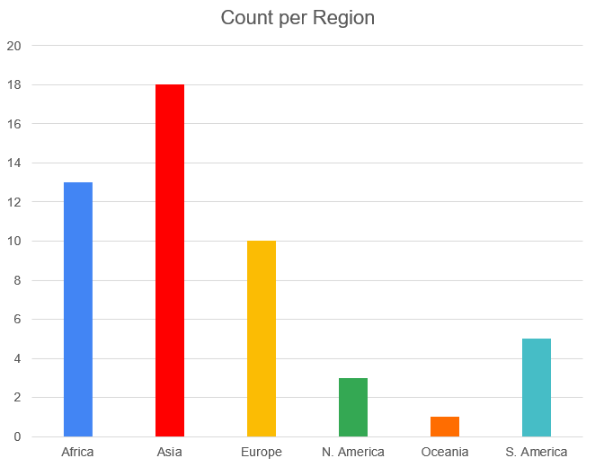
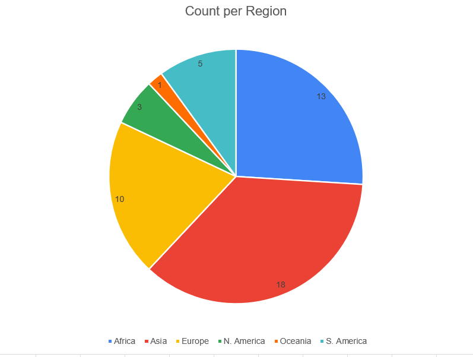

Region divides the list between the 6 major continents and helps us determine if there are any geographical factors that may lead to a country’s depression rate. The graph shows that Asia contains the most countries from the sample list. This is followed by a large minority from Africa and Europe.
 A classification system created by the world bank that separates the world economies into 4 separate groups; high, upper-middle, lower-middle, and low.
This Graph shows the average (mean) prevalence of depression of countries within each income-level group. It shows that Depression appears to be more prevalent in countries of higher-level income categories.
The Graph shows that the largest income-level group within the sample is the lower-income level category. It also shows that there are slightly more countries in the upper half of the income level groups than the lower income level groups with a ratio of 25:24.
© 2023 - 2023 Rashid Mitmug - All Rights Reserved.